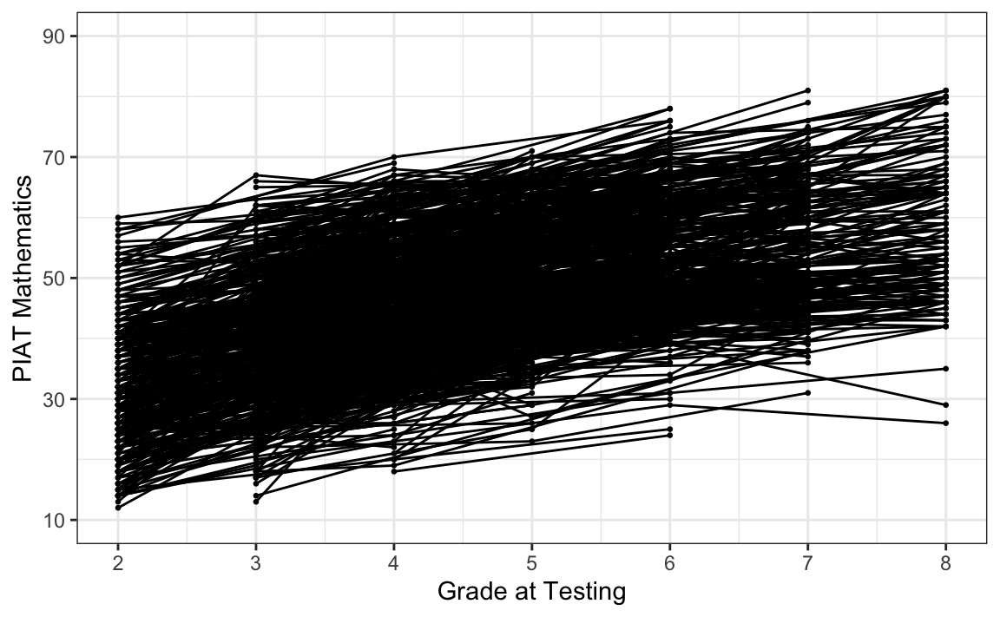
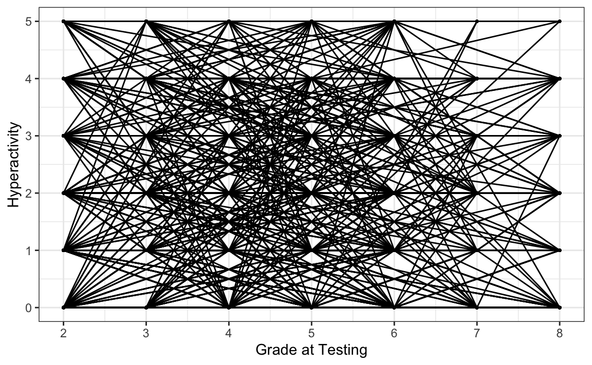
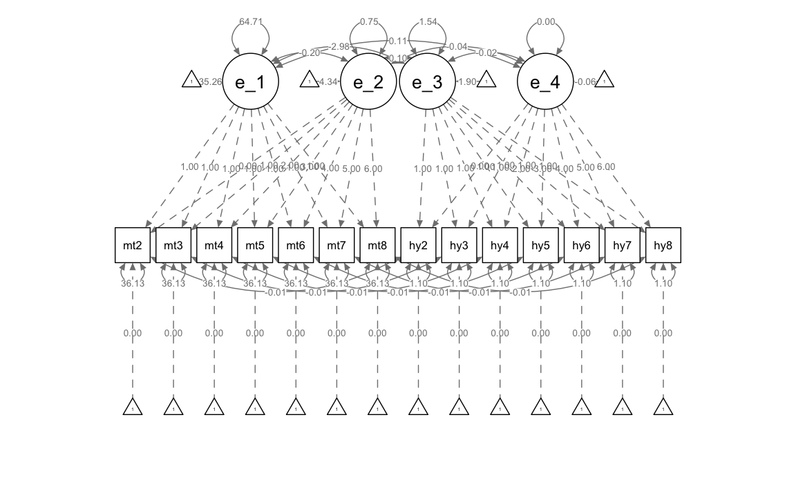

Capitolo 36 Modelli di crescita latenti bivariati
I processi di sviluppo raramente si verificano in modo isolato. Di conseguenza, i ricercatori spesso vogliono studiare più di un costrutto nel tempo per comprendere il loro sviluppo congiunto e come i costrutti e i loro cambiamenti siano correlati nel tempo. Sono stati proposti diversi modelli statistici per studiare contemporaneamente il cambiamento in più entità e in questo capitolo ne copriamo due. Il primo, chiamato modello di crescita multivariato (MGM; noto anche come processo parallelo e modello di crescita correlato; McArdle, 1988), esamina le interrelazioni tra due processi di crescita distinti. Il secondo, chiamato modello di crescita con covariata variabile nel tempo (TVC), stima l’effetto che una variabile che cambia nel tempo ha sui punteggi mentre modella contemporaneamente il cambiamento in quei punteggi con un modello di crescita. La variabile che cambia nel tempo è spesso definita come un predittore dinamico perché il suo valore cambia nel tempo. Questi modelli sono comuni nella ricerca sullo sviluppo e rispondono a domande specifiche riguardo le associazioni tra due o più entità che cambiano simultaneamente così come le associazioni tra i cambiamenti per individui correlati (ad esempio, mariti e mogli).
Carichiamo i pacchetti necessari.
Questo tutorial mostra come adattare modelli di crescita lineare multivariati (bivariati) nel framework SEM in R. I dati sono tratti dal Capitolo 8 Grimm, Ram, and Estabrook (2016). In particolare, utilizzando il set di dati NLSY-CYA, esaminiamo come le differenze individuali nella variazione del rendimento in matematica dei bambini durante la scuola siano correlate alle differenze individuali nella variazione dell’iperattività dei bambini (valutata dagli insegnanti). Iniziamo a leggere i dati.
# set filepath for data file
filepath <- "https://raw.githubusercontent.com/LRI-2/Data/main/GrowthModeling/nlsy_math_hyp_long_R.dat"
# read in the text data file using the url() function
dat <- read.table(
file = url(filepath),
na.strings = "."
) # indicates the missing data designator
# copy data with new name
nlsy_math_hyp_long <- dat
# Add names the columns of the data set
names(nlsy_math_hyp_long) <- c(
"id", "female", "lb_wght", "anti_k1",
"math", "comp", "rec", "bpi", "as", "anx", "hd",
"hyp", "dp", "wd",
"grade", "occ", "age", "men", "spring", "anti"
)
# reducing to variables of interest
nlsy_math_hyp_long <- nlsy_math_hyp_long[, c("id", "grade", "math", "hyp")]
# view the first few observations in the data set
head(nlsy_math_hyp_long, 10)
#> id grade math hyp
#> 1 201 3 38 0
#> 2 201 5 55 0
#> 3 303 2 26 1
#> 4 303 5 33 1
#> 5 2702 2 56 2
#> 6 2702 4 58 3
#> 7 2702 8 80 3
#> 8 4303 3 41 1
#> 9 4303 4 58 1
#> 10 5002 4 46 3Il nostro interesse specifico è il cambiamento intra-individuale nelle misure ripetute di matematica e iperattività durante il periodo scolastico (grade).
# intraindividual change trajetories
ggplot(
data = nlsy_math_hyp_long, # data set
aes(x = grade, y = math, group = id)
) + # setting variables
geom_point(size = .5) + # adding points to plot
geom_line() + # adding lines to plot
theme_bw() + # changing style/background
# setting the x-axis with breaks and labels
scale_x_continuous(
limits = c(2, 8),
breaks = c(2, 3, 4, 5, 6, 7, 8),
name = "Grade at Testing"
) +
# setting the y-axis with limits breaks and labels
scale_y_continuous(
limits = c(10, 90),
breaks = c(10, 30, 50, 70, 90),
name = "PIAT Mathematics"
)
Esaminiamo i punteggi di iperattività in funzione di grade.
# intraindividual change trajetories
ggplot(
data = nlsy_math_hyp_long, # data set
aes(x = grade, y = hyp, group = id)
) + # setting variables
geom_point(size = .5) + # adding points to plot
geom_line() + # adding lines to plot
theme_bw() + # changing style/background
# setting the x-axis with breaks and labels
scale_x_continuous(
limits = c(2, 8),
breaks = c(2, 3, 4, 5, 6, 7, 8),
name = "Grade at Testing"
) +
# setting the y-axis with limits breaks and labels
scale_y_continuous(
limits = c(0, 5),
breaks = c(0, 1, 2, 3, 4, 5),
name = "Hyperactivity"
)
Per semplicità, leggiamo i dati in formato long da file.
# set filepath for data file
filepath <- "https://raw.githubusercontent.com/LRI-2/Data/main/GrowthModeling/nlsy_math_hyp_wide_R.dat"
# read in the text data file using the url() function
dat <- read.table(
file = url(filepath),
na.strings = "."
) # indicates the missing data designator
# copy data with new name
nlsy_math_hyp_wide <- dat
# Add names the columns of the data set
# Give the variable names
names(nlsy_math_hyp_wide) <- c(
"id", "female", "lb_wght", "anti_k1",
"math2", "math3", "math4", "math5", "math6", "math7", "math8",
"comp2", "comp3", "comp4", "comp5", "comp6", "comp7", "comp8",
"rec2", "rec3", "rec4", "rec5", "rec6", "rec7", "rec8",
"bpi2", "bpi3", "bpi4", "bpi5", "bpi6", "bpi7", "bpi8",
"asl2", "asl3", "asl4", "asl5", "asl6", "asl7", "asl8",
"ax2", "ax3", "ax4", "ax5", "ax6", "ax7", "ax8",
"hds2", "hds3", "hds4", "hds5", "hds6", "hds7", "hds8",
"hyp2", "hyp3", "hyp4", "hyp5", "hyp6", "hyp7", "hyp8",
"dpn2", "dpn3", "dpn4", "dpn5", "dpn6", "dpn7", "dpn8",
"wdn2", "wdn3", "wdn4", "wdn5", "wdn6", "wdn7", "wdn8",
"age2", "age3", "age4", "age5", "age6", "age7", "age8",
"men2", "men3", "men4", "men5", "men6", "men7", "men8",
"spring2", "spring3", "spring4", "spring5", "spring6", "spring7", "spring8",
"anti2", "anti3", "anti4", "anti5", "anti6", "anti7", "anti8"
)
# reducing to variables of interest
nlsy_multi_wide <- nlsy_math_hyp_wide[, c(
"id",
"math2", "math3", "math4", "math5", "math6", "math7", "math8",
"hyp2", "hyp3", "hyp4", "hyp5", "hyp6", "hyp7", "hyp8"
)]
# view the first few observations in the data set
head(nlsy_multi_wide, 10)
#> id math2 math3 math4 math5 math6 math7 math8 hyp2 hyp3 hyp4 hyp5 hyp6 hyp7
#> 1 201 NA 38 NA 55 NA NA NA NA 0 NA 0 NA NA
#> 2 303 26 NA NA 33 NA NA NA 1 NA NA 1 NA NA
#> 3 2702 56 NA 58 NA NA NA 80 2 NA 3 NA NA NA
#> 4 4303 NA 41 58 NA NA NA NA NA 1 1 NA NA NA
#> 5 5002 NA NA 46 NA 54 NA 66 NA NA 3 NA 2 NA
#> 6 5005 35 NA 50 NA 60 NA 59 0 NA 3 NA 0 NA
#> 7 5701 NA 62 61 NA NA NA NA NA 4 3 NA NA NA
#> 8 6102 NA NA 55 67 NA 81 NA NA NA 2 0 NA 0
#> 9 6801 NA 54 NA 62 NA 66 NA NA 0 NA 1 NA 1
#> 10 6802 NA 55 NA 66 NA 68 NA NA 0 NA 0 NA 0
#> hyp8
#> 1 NA
#> 2 NA
#> 3 3
#> 4 NA
#> 5 3
#> 6 1
#> 7 NA
#> 8 NA
#> 9 NA
#> 10 NAPer l’implementazione SEM, utilizziamo i punteggi di rendimento in matematica e iperattività e le covariate invarianti nel tempo dai dati Wide. Specifichiamo un modello di crescita lineare bivariato usando la sintassi lavaan.
# writing out linear growth model in full SEM way
bivariate_lavaan_model <- "
# latent variable definitions
#intercept for math
eta_1 =~ 1*math2
eta_1 =~ 1*math3
eta_1 =~ 1*math4
eta_1 =~ 1*math5
eta_1 =~ 1*math6
eta_1 =~ 1*math7
eta_1 =~ 1*math8
#linear slope for math
eta_2 =~ 0*math2
eta_2 =~ 1*math3
eta_2 =~ 2*math4
eta_2 =~ 3*math5
eta_2 =~ 4*math6
eta_2 =~ 5*math7
eta_2 =~ 6*math8
#intercept for hyp
eta_3 =~ 1*hyp2
eta_3 =~ 1*hyp3
eta_3 =~ 1*hyp4
eta_3 =~ 1*hyp5
eta_3 =~ 1*hyp6
eta_3 =~ 1*hyp7
eta_3 =~ 1*hyp8
#linear slope for hyp
eta_4 =~ 0*hyp2
eta_4 =~ 1*hyp3
eta_4 =~ 2*hyp4
eta_4 =~ 3*hyp5
eta_4 =~ 4*hyp6
eta_4 =~ 5*hyp7
eta_4 =~ 6*hyp8
# factor variances
eta_1 ~~ eta_1
eta_2 ~~ eta_2
eta_3 ~~ eta_3
eta_4 ~~ eta_4
# covariances among factors
eta_1 ~~ eta_2 + eta_3 + eta_4
eta_2 ~~ eta_3 + eta_4
eta_3 ~~ eta_4
# factor means
eta_1 ~ start(35)*1
eta_2 ~ start(4)*1
eta_3 ~ start(2)*1
eta_4 ~ start(.1)*1
# manifest variances for math (made equivalent by naming theta1)
math2 ~~ theta1*math2
math3 ~~ theta1*math3
math4 ~~ theta1*math4
math5 ~~ theta1*math5
math6 ~~ theta1*math6
math7 ~~ theta1*math7
math8 ~~ theta1*math8
# manifest variances for hyp (made equivalent by naming theta2)
hyp2 ~~ theta2*hyp2
hyp3 ~~ theta2*hyp3
hyp4 ~~ theta2*hyp4
hyp5 ~~ theta2*hyp5
hyp6 ~~ theta2*hyp6
hyp7 ~~ theta2*hyp7
hyp8 ~~ theta2*hyp8
# residual covariances (made equivalent by naming theta12)
math2 ~~ theta12*hyp2
math3 ~~ theta12*hyp3
math4 ~~ theta12*hyp4
math5 ~~ theta12*hyp5
math6 ~~ theta12*hyp6
math7 ~~ theta12*hyp7
math8 ~~ theta12*hyp8
# manifest means for math (fixed at zero)
math2 ~ 0*1
math3 ~ 0*1
math4 ~ 0*1
math5 ~ 0*1
math6 ~ 0*1
math7 ~ 0*1
math8 ~ 0*1
# manifest means for hyp (fixed at zero)
hyp2 ~ 0*1
hyp3 ~ 0*1
hyp4 ~ 0*1
hyp5 ~ 0*1
hyp6 ~ 0*1
hyp7 ~ 0*1
hyp8 ~ 0*1
" # end of model definitionAdattiamo il modello ai dati.
bivariate_lavaan_fit <- sem(bivariate_lavaan_model,
data = nlsy_multi_wide,
meanstructure = TRUE,
estimator = "ML",
missing = "fiml"
)Esaminiamo i risultati.
summary(bivariate_lavaan_fit, fit.measures = TRUE)
#> lavaan 0.6.15 ended normally after 67 iterations
#>
#> Estimator ML
#> Optimization method NLMINB
#> Number of model parameters 35
#> Number of equality constraints 18
#>
#> Used Total
#> Number of observations 932 933
#> Number of missing patterns 96
#>
#> Model Test User Model:
#>
#> Test statistic 318.885
#> Degrees of freedom 102
#> P-value (Chi-square) 0.000
#>
#> Model Test Baseline Model:
#>
#> Test statistic 1532.041
#> Degrees of freedom 91
#> P-value 0.000
#>
#> User Model versus Baseline Model:
#>
#> Comparative Fit Index (CFI) 0.849
#> Tucker-Lewis Index (TLI) 0.866
#>
#> Robust Comparative Fit Index (CFI) 1.000
#> Robust Tucker-Lewis Index (TLI) -6.557
#>
#> Loglikelihood and Information Criteria:
#>
#> Loglikelihood user model (H0) -11790.476
#> Loglikelihood unrestricted model (H1) -11631.033
#>
#> Akaike (AIC) 23614.951
#> Bayesian (BIC) 23697.186
#> Sample-size adjusted Bayesian (SABIC) 23643.196
#>
#> Root Mean Square Error of Approximation:
#>
#> RMSEA 0.048
#> 90 Percent confidence interval - lower 0.042
#> 90 Percent confidence interval - upper 0.054
#> P-value H_0: RMSEA <= 0.050 0.724
#> P-value H_0: RMSEA >= 0.080 0.000
#>
#> Robust RMSEA 0.000
#> 90 Percent confidence interval - lower 0.000
#> 90 Percent confidence interval - upper 0.000
#> P-value H_0: Robust RMSEA <= 0.050 1.000
#> P-value H_0: Robust RMSEA >= 0.080 0.000
#>
#> Standardized Root Mean Square Residual:
#>
#> SRMR 0.097
#>
#> Parameter Estimates:
#>
#> Standard errors Standard
#> Information Observed
#> Observed information based on Hessian
#>
#> Latent Variables:
#> Estimate Std.Err z-value P(>|z|)
#> eta_1 =~
#> math2 1.000
#> math3 1.000
#> math4 1.000
#> math5 1.000
#> math6 1.000
#> math7 1.000
#> math8 1.000
#> eta_2 =~
#> math2 0.000
#> math3 1.000
#> math4 2.000
#> math5 3.000
#> math6 4.000
#> math7 5.000
#> math8 6.000
#> eta_3 =~
#> hyp2 1.000
#> hyp3 1.000
#> hyp4 1.000
#> hyp5 1.000
#> hyp6 1.000
#> hyp7 1.000
#> hyp8 1.000
#> eta_4 =~
#> hyp2 0.000
#> hyp3 1.000
#> hyp4 2.000
#> hyp5 3.000
#> hyp6 4.000
#> hyp7 5.000
#> hyp8 6.000
#>
#> Covariances:
#> Estimate Std.Err z-value P(>|z|)
#> eta_1 ~~
#> eta_2 -0.204 1.154 -0.176 0.860
#> eta_3 -2.979 0.673 -4.426 0.000
#> eta_4 0.107 0.164 0.654 0.513
#> eta_2 ~~
#> eta_3 0.098 0.161 0.608 0.543
#> eta_4 -0.040 0.038 -1.061 0.289
#> eta_3 ~~
#> eta_4 -0.020 0.031 -0.644 0.520
#> .math2 ~~
#> .hyp2 (th12) -0.011 0.233 -0.046 0.963
#> .math3 ~~
#> .hyp3 (th12) -0.011 0.233 -0.046 0.963
#> .math4 ~~
#> .hyp4 (th12) -0.011 0.233 -0.046 0.963
#> .math5 ~~
#> .hyp5 (th12) -0.011 0.233 -0.046 0.963
#> .math6 ~~
#> .hyp6 (th12) -0.011 0.233 -0.046 0.963
#> .math7 ~~
#> .hyp7 (th12) -0.011 0.233 -0.046 0.963
#> .math8 ~~
#> .hyp8 (th12) -0.011 0.233 -0.046 0.963
#>
#> Intercepts:
#> Estimate Std.Err z-value P(>|z|)
#> eta_1 35.259 0.356 99.178 0.000
#> eta_2 4.343 0.088 49.139 0.000
#> eta_3 1.903 0.058 32.702 0.000
#> eta_4 -0.057 0.014 -3.950 0.000
#> .math2 0.000
#> .math3 0.000
#> .math4 0.000
#> .math5 0.000
#> .math6 0.000
#> .math7 0.000
#> .math8 0.000
#> .hyp2 0.000
#> .hyp3 0.000
#> .hyp4 0.000
#> .hyp5 0.000
#> .hyp6 0.000
#> .hyp7 0.000
#> .hyp8 0.000
#>
#> Variances:
#> Estimate Std.Err z-value P(>|z|)
#> eta_1 64.711 5.664 11.424 0.000
#> eta_2 0.752 0.329 2.282 0.023
#> eta_3 1.542 0.156 9.908 0.000
#> eta_4 0.005 0.009 0.539 0.590
#> .math2 (tht1) 36.126 1.863 19.390 0.000
#> .math3 (tht1) 36.126 1.863 19.390 0.000
#> .math4 (tht1) 36.126 1.863 19.390 0.000
#> .math5 (tht1) 36.126 1.863 19.390 0.000
#> .math6 (tht1) 36.126 1.863 19.390 0.000
#> .math7 (tht1) 36.126 1.863 19.390 0.000
#> .math8 (tht1) 36.126 1.863 19.390 0.000
#> .hyp2 (tht2) 1.104 0.057 19.404 0.000
#> .hyp3 (tht2) 1.104 0.057 19.404 0.000
#> .hyp4 (tht2) 1.104 0.057 19.404 0.000
#> .hyp5 (tht2) 1.104 0.057 19.404 0.000
#> .hyp6 (tht2) 1.104 0.057 19.404 0.000
#> .hyp7 (tht2) 1.104 0.057 19.404 0.000
#> .hyp8 (tht2) 1.104 0.057 19.404 0.000Il parametro principale di interesse, la covarianza pendenza-pendenza eta_3 ~~eta_4, non è significativamente diverso da zero.
Generiamo un diagramma di percorso.
